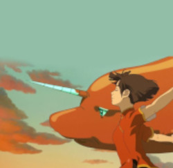
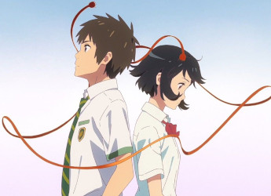
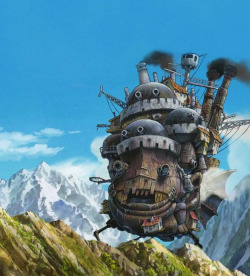

Favoritos

Big Fish & Begonia
B&T Studio - 2016
Uma garota de um reino mágico se transforma em um golfinho para explorar o mundo humano, onde conhece um jovem e embarca em uma perigosa missão que ameaça os dois universos.
Saiba mais 
Your Name
CoMix Wave Films - 2016
Mitsuha é a filha do prefeito de uma pequena cidade, mas sonha em tentar a sorte em Tóquio. Taki trabalha em um restaurante em Tóquio e deseja largar o seu emprego. Os dois não se conhecem, mas estão conectados pelas imagens de seus sonhos.
Saiba mais 
How's Moving Castle
Studio Ghibli - 2004
Uma bruxa lança uma terrível maldição sobre a jovem Sophie transformando-a em uma velha. Desesperada, ela embarca em uma odisseia em busca do mago Howl, um misterioso feiticeiro que pode ajudá-la a reverter o feitiço.
Saiba mais